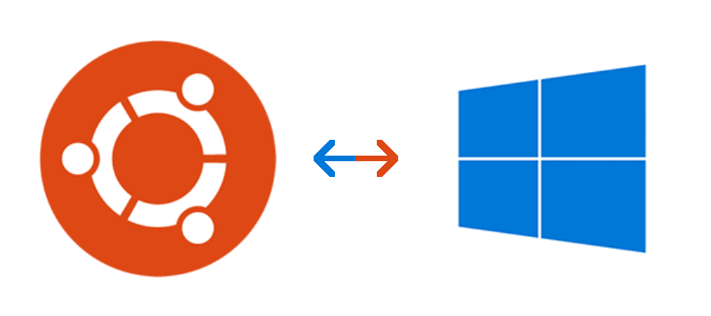

Dashboard
Painel que centraliza uma série de informações, como indicadores e métricas. É muito útil no meio empresarial, já que é projetado para ser atualizado em tempo real e de forma automática.
Dual Boot
Permite instalar dois ou mais sistemas operacionais diferentes no mesmo computador, geralmente é instalado um boot manager, que pergunta qual sistema deve ser inicializado cada vez que o computador é ligado.